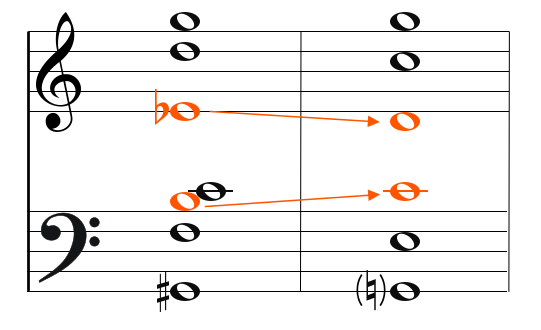

关于术语介绍的说明
本文中同样会设定许多新术语。为加以区分：文中写作“称之为……”的均为本文原创提出的词汇；写作“被称为……”的则是前人理论书籍或论文中已经存在的词汇。
在上一篇中，我们了解了多义性的基本概念。但当时选取的题材只是不涉及等音（异名同音）替换的简单枢纽和弦，从多义性理论的角度来看，仅是浮光掠影般的浅尝辄止。在这一篇中，我们将跨越单纯的“诠释或认知如何”这类思辨领域，真正推进到在理论上发掘并获得全新音响的实战高度。
 1. 日常中的多义性
1. 日常中的多义性
和弦处于多义状态在日常音乐中屡见不鲜，只要稍作进阶运用，其含义能够作两三种合理解读的模式随处可见。首先让我们对日常中的多义性进行分类梳理，以建立清晰的视野。
由省略（Omit）引发的多义性
当对和弦识别至关重要的 1、3、5、7 级音发生省略时，便会产生多重解读。尤其是被视作“根音省略形式”的和弦，必然存在着一种不将其视为根音省略、而是将眼前的最低音直接视作根音的另一种解读。

例如，“作为针对 VI7 的 Related IIm 的 Mi-Sol-Si♭-Re”，与“作为 I9 根音省略的 Mi-Sol-Si♭-Re”，在表观形态上是完全同一的；仅凭这组构成音本身，根本无从得知作者意图究竟为何。
通常这可以从后续语境推测出来：在上例中，若走向 VI7 则应视为 IIIø；若走向 IVΔ7，则将其视为 I9 的根音省略才最为合情合理。
由斜杠和弦（Slash Chord）引发的多义性
有时也无法分辨某个和弦究竟应当被视作转位等斜杠和弦，还是从根音起算的纯粹叠置。

不过坦白讲，某个和弦究竟是 IV6 还是 IIm7/IV，并不会引发什么实质性的问题。因为无论视作哪一种，其进行去向与可用音阶都几乎没有任何改变。但取决于不同的和弦，有些和弦以不同视角审视时其后续发展将大相径庭。
由挂留（Suspend）引发的多义性
sus4 与 sus2 就其本质而言，是“省略与引伸音的合体技”；正因其成为了固定套路，才被赋予了专门的和弦符号。sus2 和弦之所以比 sus4 更晚被固定下来，也是因为当“add9 omit3”的标记繁琐到一定程度后，sus2 的表达才顺理成章地成为了标准。因此，和弦的挂留本质上具备与“省略引发的多义性”相同的特征。
IVΔ7 V VIsus4 VI
三音缺席的状态，不仅具有“回归的三音究竟是大还是小尚未确定”这种简单的多义性，还具备一旦叠加上引伸音，便立刻难以与斜杠和弦相区分的特性。

三音的缺席显著削弱了低音与上部和声的紧密纽带。通过 sus4 将上下声部解绑，向意料之外和弦展开的可能性便大为拓宽。虽然可以将“挂留”归入“省略”的大类中，但在此我们姑且将其作为两种不同的技法加以区分。
特殊挂留及其记法
虽然未被赋予正式的和弦代号，但“将和弦音挪移到相邻音级上加以悬挂”的行为在其他形态下也会发生。例如将纯五度（P5）挂留至小六度（m6），或将小三度（m3）挂留至减四度（o4）等。

在和弦语义学中，我们将此类和弦也计入广义“挂留”的范畴。
不过目前对此类和弦只有“omit 与引伸音的组合”这种冗长的记法，考虑到后续的探讨显得有些不便。因此仅在本文的多义性理论探讨中，必要时我们独创采用“悬挂方向 + 悬挂后产生的度数”的记法[1]。

虽然广义 sus 记号的运用频率目前尚属未知，但有备无患，我们预先设计了这一工具。这种拓展性的挂留，蕴含着成为多义性创意源泉的潜力。
变音与挂留
即使音级度数未发生改变，当纯五度（P5）变音为增五度（+5）时，也存在将其偷换为小六度（m6）等拓展可能性。
由此可见：省略（Omit）、斜杠（Slash）、挂留（Suspend）、变音（Alteration），可被称为孕育多义性的四大要素。
语境的强弱
前面提到的“IIIø 对决 I9根音省略”的多义性中，在默认基准状态下是 IIIø 占据优势。因为 IIIø 是最直白的三度叠置原型，而 I9 则需要具备提示虚拟低音的依据支持。

（由于语境的“强度”无法完全数值化，似乎难以量化讨论；但音乐理论本就是在无法用纯数值测量的和弦稳定感、旋律倾向性、协和度等概念中一路深入探讨过来的，请将其视作相同性质的理论探索即可。）
像这样，预先把握好“在不作任何特殊设计时听众的第一候选解读”，以及掌握增强第二、第三候选语境的方法，我们就能精准调控在物理结构上完全相同的和弦的意义显现方式。
势均力敌的解读（Even 诠释）
另一方面，在默认状态下两种解读势均力敌、难分伯仲的情况也同样存在。此类和弦在多义性探索中备受欢迎，它们正是充当多义和弦的大好良材。

左侧是大家所熟知的典型复合和弦（Hybrid Chord）。无论视作省略还是视作斜杠，哪一种解读都不显拖泥带水，处于“平局”状态。
右侧则是既能看作减和弦的挂留、又能看作大七和弦挂留的中介和弦。它成为了两种音响色彩（Sonority）的“交汇点”；不断挖掘此类和弦并探索其用法，正是多义性理论的魅力所在。此处连等音拼写都各不相同，无论是拼写还是和弦性质，究竟让听众作何理解完全取决于语境，因而具备极大的施展空间。
主动踏入盲区死角
正如上一节所述，我们当前所做的是主动踏入和弦理论的盲区。面对上述难以界定的和弦，很多人在整理理论体系时会觉得它们棘手且不讨喜。因为这里涉及人类主观诠释的余地，仿佛直面了理论体系所隐藏的暧昧模糊，思考起来让人浑身不自在。但之所以感到不适，纯粹是因为人们坚信和弦代号“应该唯一确定”，即便不能确定也“必须强行定为一个”。但事实上根本并非如此。在和弦论第I章中，自由派就打破了音乐非大调即小调的“神话”。调性的大小并非天然割裂，只是我们人为划分的结果，中间自然存在模糊的暧昧地带。

多义性也是完全相同的道理。和弦代号并非注定唯一，只是我们试图将其唯一锁定而已。即便对于等音（异名同音），也必然存在模糊难辨的瞬间。既不强行将其生硬割裂，也不将其粗暴等同，而是细致入微地观测意义的摇摆与重叠——这正是我们接下来的核心议题。
2. 等音的多义性
在前面解释的多义性中，值得大书特书的其实相当有限。因为在大多数情况下，讨论往往止步于“存在多种写法记号”，在实战中缺乏足以用于创作突破的拓展性。然而，一旦等音（异名同音）的听觉认知问题介入其中，局面便会豁然开朗。此前我们深入钻研“减四度”与“增六度”，正是为了在此刻派上用场。
在上一篇中，C 大三和弦本身是板上钉钉的，仅仅讨论了引伸音如何附加这样极其初级的内容，并未涉及等音问题。

接下来我们将更进一步，探讨交织着等音的高阶多义性。
此前学过的等音多义性
说到等音与多义性，在第VII章的转调文章中，我们介绍过利用 dim7 与 aug 进行等音替换的枢纽转调法。

但这不过是在 dim7 之间、aug 之间打转轮换，说到底属于相对初级的多义性运用。接下来我们将借助引伸音与挂留，探索更高层次的等音替换可能。
dim7 与 Δ7 的多义性
例如减七和弦（dim7）与大七和弦（Δ7），只要善用挂留，其构成音便能出人意料地轻松重合。

仅仅是等音拼写不同，在键盘上的物理位置完全一致。这种状态在英文中被称为 Enharmonically Equivalent（等音等价）。利用这一点，我们来制造一出“原以为是 ♯I 族系的和弦，实际却是 ♭II 族系”的听觉魔法吧！

请注意第4小节。根据此前的前向语境，这原本是标准的经过减和弦 ♯Io7。但其最高音不是 Mi 而是 Fa。从 ♯Io7 的角度看，这是将小三度挂留到了减四度，正在渴望得到解决。然而这一挂留迟迟没有解决，到了第3拍 Sol 音不知为何走向了 La♭……在这个节点上，听众开始隐约察觉到这其实是 ♭IIΔ7。随后乐曲走向 E♭7 和 B♭m7，顺利转调至 F 小调（或 B♭ 多利亚调式）。
换句话说，原本以为是在挂留的音其实只是普通的三音；原本以为是具有下行倾向骨架音的减五度音，其实是意图上行的音——这样一场大反转，在全曲结束回看时一清二楚（但在和弦响起的瞬间根本无从知晓）。这就是该手法的精妙机制。

在第3拍出现的 La♭，是在 ♯Io7 语境中极罕见出现的音，也就是作为 ♭IIΔ7 语境的“特定音”，这一点至关重要。前两拍保持多义状态，在第3拍注入特定音以彻底确定其作为 ♭IIΔ7 的含义——我们在此成功构建出了这样一个精妙的戏剧性过程。
树立实时（听到的瞬间）认知的意识，而非依赖事后（听完之后）的宏观分析，创作者与听众之间便产生了心理上的“博弈”，探讨重心也从“如何纵向堆叠”升华为“如何呈现听觉体验”——上一节的核心思想在此得到了生动实践[2]。
转换过渡（Transition）
在实施此类复杂的偷换时，如上例所示，将特定音延后抛出、实现渐变式的转变，能够非常自然地引导听众的认知。这正如上一节在讲解枢纽和弦时探讨过的那样……

在不涉及等音替换的枢纽转调中，哪怕没有如此细致的向导也完全能成立；但若涉及等音替换，向导的作用就不可估量了。我们将这种“通过逐步抛出构成音、分阶段循序渐进地完成语境替换”的技法（或该时间段），称之为转换过渡（Transition）。
转换过渡 (Transition) : 在将和弦用作枢纽功能时，通过演奏后向语境的特定音，使语境分阶段发生渐进变化的过程或时间段。 : 即使不涉及等音替换的类型，也包含在广义的转换过渡之中。
若在枢纽和弦中完全不演奏特定音，听众直到后续和弦发响时才会猛然意识到方向发生了偏转，这会带来强烈的“惊悚反转”效果。而当后向语境具备多个特定音时，越是不一股脑抛出、而是有节奏地循序渐进展现，转换过渡就会越发丝滑平顺。

在进行等音认知置换时，采用阶梯式的转换过渡更加稳妥可靠。如果置换失败，原本创作者自以为是可用引伸音（Available Tension）的声音，在听众耳中完全可能变成刺耳的回避音（Avoid Note）。
第一转位的多义性
鉴于内容相当硬核，我们再介绍一种模式，以彻底熟悉这种“置换与过渡”。

这是在常见的 4-3-6 进行之后、在第4小节采用 II9 第一转位的模式。虽然与经过减和弦有些类似，但从低音叠置看“II9的一转”实际上是半减七和弦，略有不同。在当前状态下它还是毫无修饰的单义和弦，但只要改变其中一个音，含义就会变得极其复杂耐人寻味。

这次发生偷换的不是低音，而是内声部投入的 ♭13th（= b♭ 音），它犹如一剂“毒药”。叠置在 f♯ 和 e 之上的这个 b♭，同样可以被看作 a♯。换言之，下方三个声部开始散发出 F♯7 的语义信号！
由于下方三个声部极其清晰地组成了“根音-七音-三音”的铁三角，听众内心原本“真正的根音是 D，当前是第一转位”的基础认知开始发生剧烈动摇。创作者与听众之间的博弈由此拉开帷幕。
根音的认知一旦动摇，各音的骨架音（）认知也随之动摇。原本只是根音和五音的上方两声部，在 F♯ 被视作根音的瞬间，摇身一变成了 ♭13th 与小三度（变音被取消）这一对个性极强的怪异组合。

也就是说在这个场景中，Si♭ 音承担了超越单纯“II7 的 ♭13th 引伸音”的重大使命。它在根音位置认知上掀起波澜，引发了所有音符骨架属性的全面摇摆。这是运用“根音省略的多义性”的高阶技法。
检索并运用特定音
由此产生的多义性，通过弹奏后向语境的特定音得以收拢。“在 D9 中极难发响（≒回避音）、但在 F♯7 中却能轻松演奏的音”是最完美的特定音。哪个音符合条件呢？

最合适的莫过于 c♯。它破坏了 D7 的三骨架，同时对 F♯7 而言却是坚固强化根音的纯五度（P5），堪称完美。 在上例中，我们在第3拍切入该音完成了“阶梯式转换过渡”，最终平稳着陆到了 F♯m 调；但同样也可以将 F♯7 视作其他音级，继续向其他调性进发。
过渡方式的对比
既然在进行等音替换时阶梯式的过渡更为稳健，我们不妨对比确认一下非阶梯式的情况。

这是不给出特定音的版本。虽然 b♭ 音作为 a♯ 做出了一定程度的提示因而勉强连贯，但难免带有一种“孤军奋战”之感，未能获得刚才那般的丝滑平顺。

这次是从小节开头就直接弹响 c♯ 音，瞬间将其锁定为 F♯7(-10)。进入的瞬间落差过大，显然带有强烈的突兀违和感。
相比之下，从 II9(-13) 切入并逐步增强其作为 F♯7 质感的阶梯式做法，促成了何等平滑自然的转调，其优越性一览无余。 顺带一提，即便是 ♭13th 本身也带有一定的“异物感”，只要将其登场时机稍作微调延后，听觉连接感就会再次发生微妙变化。

在这种情况下，小节开头是纯粹的单义：毫无杂质的 D9/F♯，此时绝无任何人会预料到它将变成枢纽和弦。从 b♭ 注入的瞬间多义性开始显现，紧接着 c♯ 迅速将其安抚平复。过渡实在太为自然，甚至让人几乎觉察不到发生了转调。
此外必须牢记的一点是：“即时过渡”与“阶梯式过渡”这两个例子，如果以小节为单位写成和弦代号，两者会被视作完全相同的东西。 在调外和声的世界里，通过制造等音认知的动摇与流转，能够赋予声音深邃得多的层次内涵。这理所当然依赖于对排列法（Voicing）与声部进行（Voice Leading）的精微调整。这已经达到了仅凭事后“离线”分析的和弦代号所无法企及的全新维度。
3. 那不勒斯式与佯谬型
在枢纽和弦的情况下，看完后续和弦之后，和弦原本究竟意味着什么往往水落石出。然而如果两个语境所指向的目标和弦完全一致，那么即便利用户后文也无法判明该和弦的属性。这就是“那不勒斯六和弦”的理论诠释之所以陷入百年纠葛的重要原因。

因为 IIm 和 IV 最终都走向 V，即使得知后续是 V，对于判断那不勒斯和弦的渊源也毫无用处，结果导致意义始终无法敲定。
然而换个角度看，这种状态意味着该进行同时受到两个语境的强力支撑，是极度坚不可摧的状态。在讲解那不勒斯六和弦的文章中，我们曾将其比喻为“咖喱乌冬面”[3]。
这种“那不勒斯式”的意义叠加，与枢纽和弦形态略有不同。因为在它身上并不存在此前讨论核心的那种“语境的转换过渡”般的先后时序逻辑。


在这种“那不勒斯式”的模式中，甚至可以说正是在这里，潜藏着更多催生奇妙新颖音响的构思苗头。接下来，我们将正式踏入“非枢纽和弦型的等音多义性”领地。
♯V 与 ♭VI 的摇摆
以我们身边的 Sol♯ 与 La♭ 的等音摇摆为例。

在 ♯V 根音族系中最基础的是减七和弦，而在 ♭VI 根音族系中最基础的是大七和弦，因此这与前面的“♯Io7 与 ♭IIΔ7”处于完全相同的对等结构。

以完全相同的方法，我们可以找到具备 Enharmonically Equivalent（等音等价）特质的中间和弦。平时我们如何区分它们，全凭前后语境以及旋律的配合。
那么试想：若后续和弦是 VIm7(11)/V，无论是接 ♯Vo7 还是接 ♭VIΔ7 都毫无违和感，此时听起来究竟会更像哪一个呢？

而且当我们接连置换构成音时，在人类耳朵里，究竟到何种程度算作 ♯V，从哪里开始算作 ♭VI 呢？如果真存在无法区分的中间过渡地带，我们对那种音响的直观体验又将如何？
势力分布格局
在 ♯Vo7 族系与 ♭VIΔ 族系之间，存在着各自的“友军”与“敌军”音符。

挑选出几个适合本次实验的代表性音符：对于 ♯Vo7 而言，Mi♭ 与 Si♭ 是相当“不像自己风格的异质音”，如果伴随它们出现，听众将其认知为 ♭VI 族系的概率会大为增加。 而在 ♭VI 这一边，虽然可用音看似很多，但自然还原的 Si♮ 却是极具破坏力的异物。如何运用两派语境的各自特定音，将成为破局的关键。
未使用特定音的中立配置
首先，若完全不使用双方的特定音而采用纯中立的排布，在预期中意义将无法确定，理应产生模糊感。

这是实际执行的范例……听感如何呢？
本以为避开特征音组织了相当“中立”的阵型，但实际听来似乎更偏向于 ♭VI 一侧。后续低音是 Sol 这一点，恐怕在客观上暗中给 ♭VI 增加了筹码。
此外，从 ♯V 来看 Do 是“减四度”这种奇特罕见的音程，在缺乏减七和弦鲜明语境暗示的情况下，人们第一直觉自然将其认知为“大三度”。试图制造中立状态的尝试在此稍显欠火候。

这表明：在每个单独音符的音程认知上本身就存在优先级的强弱高低，和弦认知正是这些认知交织组合的产物。我们需要更加细腻地兼顾这一规律。
佯谬型的分离配置（Paradox Type）
从根本上说，为了追求中立而闪烁其词、刻意避开具有鲜明特征的 Si 或 Mi♭，只会产生一种含糊不清的温吞感，坦白说缺乏足够的审美趣味。
于是，我们反其道而行之：与其逃避，不如让双方极具特征的音正面激烈碰撞，以此达成意义的动态均衡。不再回避冲突，而是通过倾力相撞来彼此拥抱——这是一种极具血性的激进策略。

像这样，在最高音坚挺地弹响 Si 音，构成“外声部展现 ♯Vo7 色彩，而若单看下方4个音则是纯正的 ♭VIΔ7”的分离阵型。一种玄妙深邃的崭新音响终于喷薄而出！
构成音的悖论
这个和弦已经处于常规和弦理论的视界之外。若视作 ♯Vo7 族系，其中的 Mi♭ 音令人匪夷所思；若视作 ♭VIΔ7 族系，其 ♯9 音 Si 则是属七和弦的专属特权，在大七和弦中属于绝对严禁添加的禁区。

无论假设为哪一方都是错的。在传统理论看来这个和弦结构堪称“错误百出”，然而一旦实际弹响，它却展现出无比健康动听的优美声响。
这也理所当然：这种配置完全符合旋律篇第V章中所讲的和声化理论，首先在纵向和声上它本身就是自洽成立的；而在与前后和弦的横向连接上，无论将其视作 ♯Vo7 还是 ♭VIΔ7 都能与后续和弦极佳衔接，横向逻辑同样无懈可击。如果对这个和弦的构成感到违和，那只能说明是受到了单义性思维的禁锢。
像这样，原本用于将和弦锁定为单一语境的“特定音”，若反其道而行之同时鸣响，就会变成阻止和弦向单义状态收敛的明确制动器（除非强行用等音拼写生硬圆场）。
我们将这种在单义视角下看似充满矛盾、实则“同时鸣响多重特定音”的多义性，统称为佯谬型 / 悖论型（Paradox Type）。正因为这是在传统理论视界中逻辑冲突的声响，才让人深切感受到扎扎实实探究多义性理论的巨大价值。
佯谬型的混合配置
上面的例子是将 ♯V 成分置于上方、♭VI 成分置于下方，采用了上下声部分离的配置。但这若用复合和弦记法写成“Bm(-5)/A♭Δ7”，依然能够被相对整齐地标记，让人略感不够过瘾。于是，我们尝试将两种语境成分更加深度交织混浊的混合配置。

这是在极度开放排列的 ♭VIΔ7 骨架之间，将 ♯Vo7 的和弦音如利刃般纵向贯穿交织的形态。这种离经叛道的奇异阵型，甚至让人连给它起和弦代号的念头都打消了[4]。在此 Si 与 Do 在内声部以半音激烈碰撞，虽然走位极为大胆，但由于发生在内声部，且谁是和弦音谁是引伸音在此完全混沌难辨，听觉上依然极佳地成立。
佯谬型的历史源流
“只要存在一个能够兼顾两种语境的后续和弦，即使同时弹响两种语境的特定音也能成立”——这种佯谬型的构想，其实并非今人首创。数百年前就已经存在这种技法的先驱典范，那就是——增六和弦。

增六和弦的原动力，是在古典小调的 II-V 进行中，将常规 II 级（半减七和弦）所拥有的 La♭，与重属和弦化 II 级（属七和弦）所拥有的 Fa♯，同时奏响。

在发响的瞬间虽然听起来奇异，但只要在后文各自获得优美的解决，便能构成极佳的“紧张与解决”，故事逻辑完全通畅。我们今天所做的探索，在本质上与之一模一样：在同时弹响 ♯Vo7 特征音 Si 与 ♭VIΔ7 特征音 Mi♭ 的同时，后续的和弦稳稳地接住了它们。


若缺乏这种周密设计，失去解决归宿的音符就会悬空孤立，产生格格不入的突兀风险。只要赋予音符明确的意义并保持前后紧密呼应，在“增六和弦”之外的其他模式中同样可以推行这一方法（目前虽尚属假说层面，但逻辑坚实）。
结合其他要素的平衡调控
本次实验是在“无旋律”、“后续固定为 VIm7(11)/V”的限定条件下展开的，若结合旋律等更多要素，听觉质感又会产生新的变数。例如：在偏向 ♭VI 的和弦上方，奏响带有 ♯V 韵味的旋律会怎样？
IVΔ7 V7 ♯Vo7(↑o6,o8,o11) VIm7(11)
打个比方，在单义性的世界里只有“非红即蓝”的二元价值观。现实中存在微妙的色彩渐变，但往往被忽视，人们的目光始终聚焦于“到底属于哪一边”的非此即彼。而在多义性的世界里，“紫色”的存在首先得到了正式承认，既有“蓝紫”也有“红紫”，价值坐标建立在品鉴与玩味这种色彩微妙差异之上。

因此在听完上述音频后，下达“听起来像 ♯V”或“听起来像 ♭VI”的最终定论毫无必要；而“用 ♭VI 拼写在解读上更优雅”这种纸上谈兵的符号之争在此同样毫无意义。
最重要的是：正如在佯谬型范例中所见，在以往‘非此即彼’的执念下，曾有多少被扼杀遗忘的宝贵音响表达正静静沉睡；而我们曾坚信是严谨系统的理论思维，或许反而在无形中阻碍了我们去发现它们。
正如在“元音乐理论”中所阐述的：音乐理论在建模的瞬间就会削减信息，部分音乐必然会被放逐到体系之外。系统越是严密自洽，人们就越难察觉这一盲区，甚至不知不觉间被困在看不见的囚笼中创作。
一旦推开多义性的大门，呈现在眼前的将是大量未经开垦的处女地和弦。将何者与何者重叠？让哪种色彩更浓郁？在全部12个音的世界中，尚未被理论完全规训的奇妙声音，依然浩瀚如海。
总结
- 除枢纽转调外，引发和弦多义性的四大主因包括：省略（Omit）、斜杠（Slash）、挂留（Suspend）、变音（Alteration）。
- 借助等音替换实现的枢纽转调不仅限于“dim7 之间”或“aug 之间”，在“dim7 与 Δ7”等异类和弦之间同样可行。
- 在实施高阶等音替换时，运用“转换过渡（Transition）”让语义分阶段渐进蜕变，能让听众更容易理解接受。
- 在指向同一目标的双语境叠加的“那不勒斯式”多义性中，同时弹响各方特定音的“佯谬型（Paradox Type）”在具备妥善解决语境的前提下完全可以成立。